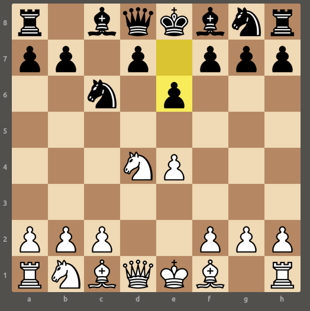

1.e4 c5 2.Nf6 is Sicilian. 2..d6 is main line, 2..Nc6 is the “Old Sicilian”.
3.d4 cxd4 4.Nxd4 is the Open Sicilian. 4..Nf6 continues the open, but 4..e6 is the “Sicilian Taimanov Variation” (and the second most popular move)

The move common next moves is 5.Nc3 and 5.Nb5
8.Bf6 is described as a mistake on the phone app, and a blunder from the website. 8.Qf3 is the best move. My motivation was first to protect the e pawn, and to develop the bishop and open king-side castle. I think I discounted the queen move because it didn’t do those two things.
The variation the site suggests is 8.Qf4 Qb8, 9.Qg3 Qxg3 10.hxg3 Kf8 (removing the Nc7 fork) 11.O-O-O Nf6.
This is opposed to what actually happened, which was 8.Bf6 16, 9.f4 Qb8, 10.Nd4 Nxd5 11.Bxd4. Black blunders here and on the following move, basically losing the game (-8.63) but the best move is 11..Qxf4
In the first position: * material is equal * White has castled and the both the rooks are on half open files * Nearly all whites pieces are nicely positioned. The knight on C is a bit limited, and the one of B is exposed to pawn attack. But the bishops are well positioned * Black has the developed knights, which are in its favor. But it can no longer castle. * White has a doubled pawn and the e pawn needs to be defended.
In the second position: * Black is up a pawn * Black has that queen centralized, though she can be driven away * White’s development and (with the exception of the black queen) control of the center is quite good * Neither of whites rooks are well positioned.
Starting from 20..g5, 21.Qh6 is mate in 5, 21.Rxg5+ is mate in 4. I managed a mate in 7: 21.Rxg5+ Kf8 22.Bc5+ Ke8 23.Rg8+ Rf8 24.Qxg7 Rxg8 25.Qe7#
After 21.Qh6 e5, I played 22.Ne4, which lead to a mate in 6. But 22.Bxh7+ gives mate in 4: 22.Bxh7+ Rxh7 23.Qg6+ Kf8 24. Bc6+ Re7 25.Nd5 Be6 26.Bx7#
7.Ndb5 (good): Qd4 14.f5 (inacc) : Bxg7 (winning pawn) 19. fxe6 (good) : Ne4
1. e4 c5 2. Nf3 Nc6 3. d4 cxd4 4. Nxd4 e6 5. Be3 Be7
6. Nc3 Qc7 7. Ndb5 Qe5 8. Bd3?[1] a6 9. f4 Qb8 10. Nd4 Nxd4
11. Bxd4 Bh4+? 12. g3 Bxg3+? 13. hxg3 Ne7 14. f5?! O-O 15. Qg4 Nxf5
16. exf5 Qxg3+ 17. Qxg3 f6 18. Rg1 Rf7 19. fxe6 dxe6 20. Qh4 g5
21. Qh6 {Missed Mate} 21... e5 22. Ne4 exd4 23. Nxf6+ Rxf6 24. Qxf6 h6 25. Bc4+ Be6
26. Bxe6+ Kh7 27. Rh1 Re8 28. Rxh6# 1-0
[1]: Mistake, possibly a blunder
[2]: Missed mate